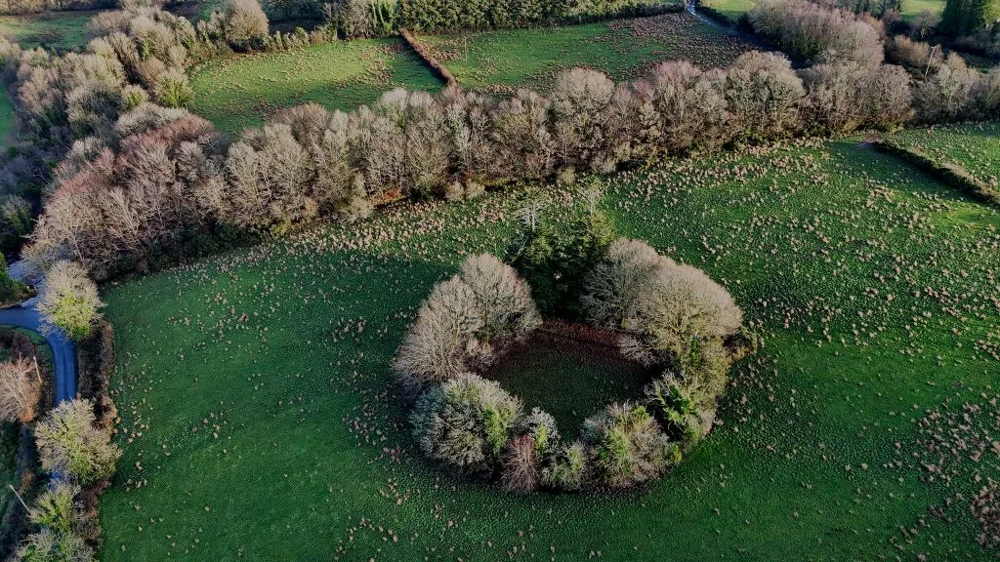
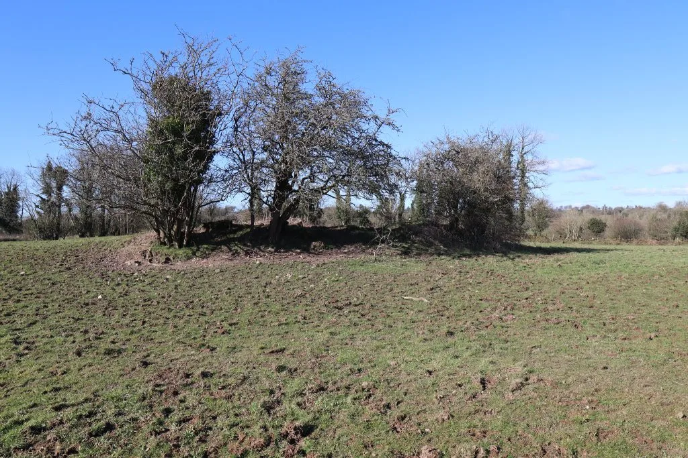
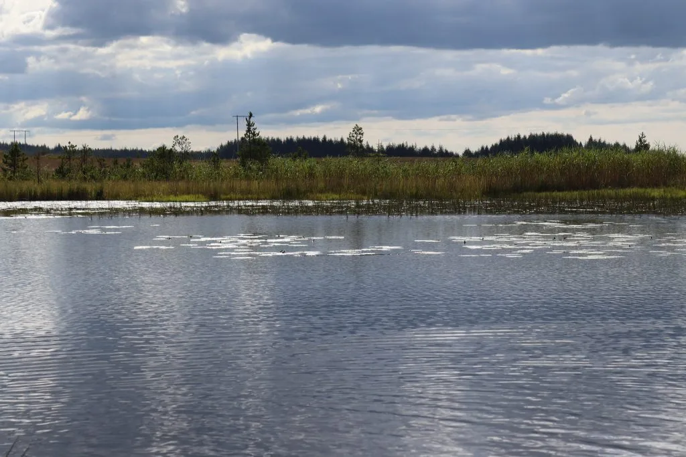

Moyglass
Moyglass in Irish is “Maigh Ghlas” meaning green plain. In the electoral division of Marblehill it is 871.95 acres or 352.86 hectares in size. In the 1841 census there were 294 people, 50 inhabited and 2 uninhabited houses and in the 1851 census it was down to 150 people and 29 houses in this townland. The 1840 map showed a large concentration of houses just south of of the middle line of Moyglass and also in the northern edge of the townland, in excess of 85 houses or outbuildings. The southern mountainous region and the central more fertile region had a much lower concentration of houses. The site of the old Moyglass school was on the road opposite O’Connor’s pub but modern day school is in Slatefield.
In the Griffith’s Valuation there were 14 houses, 16 landholders, a commonage and a children’s burial ground. In the 1901 census there were 20 residences and 77 inhabitants and in the 1911 census there were 20 residences and 78 inhabitants in Moyglass.
There is a ringfort in the eastern side of the townland and towards the south eastern end there is a children’s burial ground named locally as Knockaunanagall which roughly translates as small hill of the foreigner or outsider.


In the north side of the townland there is a small lake known locally as Moyglass lake. About 3 to 5 acres in size and in a picturesque setting, it has a traditional name of Loughanewa in Irish “Loch an Chroibhe” meaning lake of the branching tree or branches.

Moyglass house in the south east end of the townland is a substantial property still occupied today. The landestates.ie description says, ‘Lewis records Moyglass as the seat of J. Burke in 1837. It was occupied by Andrew O Hare at the time of the Griffiths valuation. In 1906 it was the property of representatives of James Haig and was valued at £8. Buildings are still extant at the site’.
Moyglass borders Acres, Alleendarra West, Commons West, Gorteenayanka, Laggoo, Loughatorick North, Marblehill, Slatefield and Toorleitra.
Map
Placenames
| Name | Type | Notes |
|---|---|---|
| The Roochóg | sub-townland | Known as “Roochóg” and “The Roochóg”. One person said “The Roochóg” was the area around Tommy Murray’s house and another said it included all of the houses (Duggan’s, Tommy Murray’s, Stephen Whyte’s, Catherine Fahy’s, and Tommy Duggan’s). |
| Capparan | field | |
| Charlie’s | field | |
| Walty’s | field | “Walty” here is Walty Martin. |
| Healy’s | field | Pronounced “Hayley’s”. |
| Patch’s Garden | field | “Patch” here is Patch Kenny. |
| The Horses Field | field | |
| The River Field | field | |
| The Middle Field | field | |
| The Hill Field | field | |
| The Lime Kiln Field | field | |
| The Cherry Tree Field | field | |
| The Well Field | field | |
| The Well Field | field | |
| Shanbally | sub-townland | |
| The Callows | field | Either side of the river here is known as “The Callows”, it’s very wet. |
| The Hollow | field | |
| The Long Strips | field | |
| The Bullaroo | field | |
| The Furry Hill | hill or hills | |
| The Long Meadow? | field | Not sure if this is the right field. |
| Healey’s Wood | wood | Healey pronounced “Hayley”. |
| Moyglass Lake | lake or lakes |
Houses
| Name | Notes |
|---|---|
| Tommy Duggan’s House | |
| Catherine Fahy’s House | |
| Stephen Whyte’s House | Stephen Whyte was said to be a blind musician. |
| Tommy Murray’s House | |
| Duggan’s House | |
| Mahon’s House | Then Fahy’s. |
| Hayes’ House | |
| O’Dea’s House | Given to use as O’Dea’s house (pronounced “O’Day”). There is no house recorded in plot 4 on the Griffith’s Valuation, Patrick Mohan is recorded as the proprietor but for land only. On the 1901 census Mary Kildea was the head of family here, on the 1911 census it was John Kildea with Anne, Mary F, and John O’Dea living with him. |
| Mahon’s House | |
| Dervan’s House? | Not sure if this was Dervan’s, but it was a land commission house along with 2 others. Michael Shiel was the proprietor on the Griffith’s Valuation for land only. |
| Kenny’s House | Patch Kenny. |
| Martin’s House | Then Page’s. |
| Hogan’s House | |
| Boland’s House | |
| Mahon’s House | |
| Healey’s House | Healey was pronounced “Hayley”. This house does not appear on the 6″ map. |
| Tommy Francis Flynn’s House | |
| Gorman’s House | Bridget Hayes was the proprietor of plot 12 on the Griffith’s Valuation, she may not have lived in this house as it is a large area. Martin Gorman is listed alone on the 1901 census, his wife Bridget died 23/10/1891. He died 14/07/1906 in the Loughrea Workhouse. This house does not appear on the 1911 census. |
| Allen’s House |
Buildings
| Name | Notes |
|---|---|
| Moyglass School | |
| Comer’s Forge | |
| The Old Sheds |